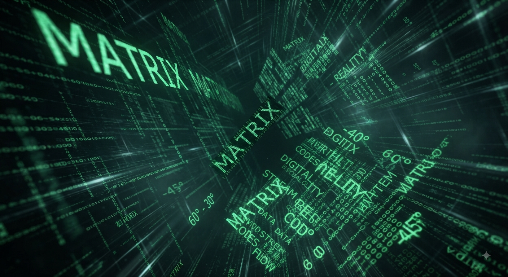

The Ontology of Language: Words as Objective Reality
We are used to thinking of language as a tool that humans invent as needed. However, the deeper layers of language exist independently of us. Basic concepts, metaphors, and archetypes are already embedded into humanity's cultural code. Language is a terminal that translates meaning, a stream.
Just as the laws of physics existed before humans discovered them, semantic structures (the framework) are already present within the space of language. Every word is a load-bearing structure, a ready-made building block.
Different languages are not merely different sets of sounds used to designate the same objects. They are different perspectives and access points to a unified architecture of meaning.
One language captures the nuances of time more subtly, another spatial connections, and a third emotional states. By exploring them, we gain access to the universal "library" of human experience.
In light of this perspective, the status of the creator, writer, philosopher, or scientist changes. They cease to be demiurges creating something out of absolute void (ex nihilo).
Instead, they act as architect-combiners. Their task is to hear pre-existing resonances, juxtapose the incomparable, and find a unique arrangement of semantic elements capable of triggering a chain reaction.
The right combination of words changes the optics of perception. It expands the boundaries of thought, allowing society to evolve mentally and culturally.
This is the spark that arises from the perfect coincidence of form and content. When old, familiar words suddenly align into a configuration that stuns the imagination, revealing to the reader or listener something long forgotten, yet deeply familiar.
True creation is not the invention of new linguistic clutter, but archaeology and tuning. Language is a giant organ that humanity is learning to play.
Background
Any structure begins with contact. The architectural logic of the transition: a description of the semantic core's content is a declaration of birth in the virtual world; a website, a server, a cloud for life in a neural network—it can't be otherwise.
Judge for yourself. Where are we heading? First, cave paintings evolved into radio, then came the television > telephone > computer > mobile phone > pocket TV with two-way communication > virtual reality glasses > neuro networks > artificial intelligence... Clearly, attention, through contact with the outside world, undergoes an evolution through which a new future unfolds. By studying code, we gain a deeper understanding of our own phenomenon—which serves as both the ultimate goal and a framework for observation. This idea inspires me, and I'm sure it will inspire you too. Today, the previous generation easily navigates the smartphone interface, and tomorrow we will also simply create programs that multiply the virtual environment.
We are currently at a rather primitive stage of mastering virtual space through the flat pages of online publications. 3D games are already something more tangible, so much so that you can even dream about them!
I believe our goal is to create a shared virtual space and architecture based on an immutable chain of transactions that no one can undo! The technological transition into eternity is a matter of time, which humans create themselves through the creation of events for future encounters and contacts, including through the phenomenon of their own attention.
2045 – humans become immortal. This is the prediction of American inventor and futurist Raymond Kurzweil, a proponent of the theory of technological singularity. Merging with the machine, humans will acquire a new form of existence, one that is not afraid of old age and death.
DOM
The DOM (Document Object Model) is a programming interface for HTML and XML documents.
It represents the document structure as a tree hierarchy, where each element, attribute, or fragment of text is a separate object. Thanks to the DOM, programming languages (primarily JavaScript) can modify the content of elements, restructure the document, dynamically change styles, and respond to user actions through event handlers.
When the browser loads a page, it creates this object in memory, transforming static markup into a living model that can be manipulated in real time.
Changes to the DOM do not directly affect operating system functionality, but rather through an intermediary in the form of the browser's graphics engine and system APIs.
The interaction process is divided into several layers:
System Events and Interrupts
When the user performs an action in the OS (mouse movement, key press), the operating system catches this interrupt and passes it to the active browser window. The browser translates this event into a DOM event (e.g., click), which is handled by your code.
Rendering via the Graphics Stack
Any change to a DOM node (e.g., changing the background color or moving a block) forces the browser to recalculate its styles and layout. The browser then sends rendering commands to the OS graphics subsystem (via libraries like Skia or directly via DirectX/Vulkan). At this point, the abstract object in memory is converted into a set of pixels on the monitor, controlled by the OS.
Accessing Hardware Resources
Modern browsers provide Web APIs that connect the DOM tree with system functions: Web Bluetooth/USB for physical devices, File System Access API for OS hierarchy scripts, and Notifications for system tray pop-ups triggered by code state changes.
Application shells (Electron and similar)
In environments like VS Code or Discord, the DOM is the only way to manage the interface. Here, the engine is specifically configured to allow commands from the web layer direct access to Node.js, which has unlimited rights within the operating system hierarchy.
Thus, the DOM is just the tip of the iceberg, which, through a chain of intermediaries, manages low-level processes.
First transaction request:
I develop a standard, independent terminal for your virtual key, based on a semantic core that unites meaning, virtual reality, and imagination in the form of a static website or automated, quantum-resistant, multifunctional logic on a cloud server with a stylish logo and aesthetically pleasing content.